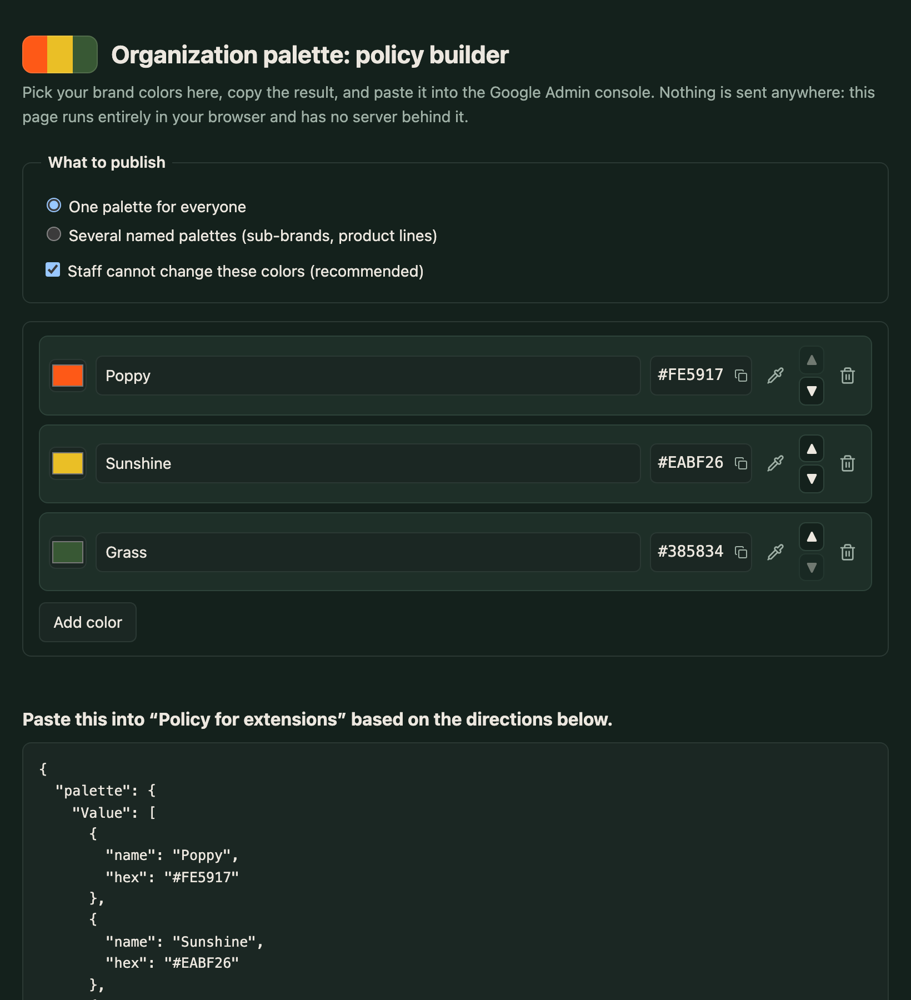

Admins pick the colors, it writes the policy
Choose your colors and whether staff can change them, then copy the result into the Google Admin console. No hand written configuration, and no server to run.

Choose your colors and whether staff can change them, then copy the result into the Google Admin console. No hand written configuration, and no server to run.
